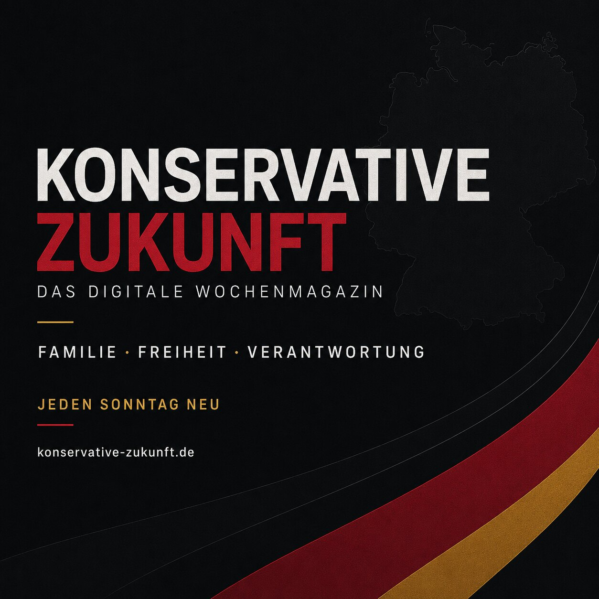

000Eine Zukunft braucht ein Fundament.PILOT
Gestaltungsstudie
Ausgabe 000
Der redaktionelle und visuelle Ausgangspunkt des Projekts.
Das Titelthema
Die Pflegereform will Kassen stabilisieren. Doch sie belastet ausgerechnet jene, die Eltern und Partner zu Hause versorgen. Ein konservativer Blick auf den PNOG-Entwurf.

In fünf Minuten
Was wichtig ist – und was daraus folgt.
Pflegegrad 1
Der bisherige Entlastungsbetrag von 131 Euro soll entfallen. Prävention ist richtig – praktische Hilfe bleibt trotzdem nötig.
Häusliche Pflege
Neu Eingestufte in Pflegegrad 2 oder 3 sollen drei Monate lang nur die Hälfte des neuen Entlastungsbudgets erhalten.
Alterssicherung
Künftige Rentenbeiträge für pflegende Angehörige sollen auf 70 Prozent der bisherigen Beträge begrenzt werden.
Faktencheck
Seit Januar 2026 sind es 259 Euro je Kind. Ab 2027 soll die Auszahlung schrittweise ohne Antrag möglich werden.
Demografie
Die Geburtenziffer fiel 2025 auf den niedrigsten Stand seit 1997. Familienpolitik ist damit eine Frage nationaler Zukunftsfähigkeit.
Ausgabe 001
Familie ist kein Lückenbüßer. 12. Juli 2026Die aktuelle Ausgabe
Die Webausgabe bündelt Titelgeschichte, fünf Wocheneinordnungen und den Ausblick auf die nächste Debatte. Ausgabe 001 steht zusätzlich als gestaltetes PDF bereit.
Nächste Debatte
Max Krah verbindet den Geburtenrückgang mit der Stabilität umlagefinanzierter Sozialsysteme. Der Grundgedanke verdient eine offene Prüfung. Eine konkrete Prognose von nur noch einem Kind je Frau ist durch die aktuellen Destatis-Zahlen jedoch nicht belegt.
Redaktionelle Notiz lesenDie LeitfrageWas muss Deutschland ändern, damit Familiengründung wieder als Aufbruch statt als Risiko erlebt wird?
Dauerhaft lesbar
Pflege, Familie und die Glaubwürdigkeit politischer Prioritäten.
Der redaktionelle und visuelle Ausgangspunkt des Projekts.